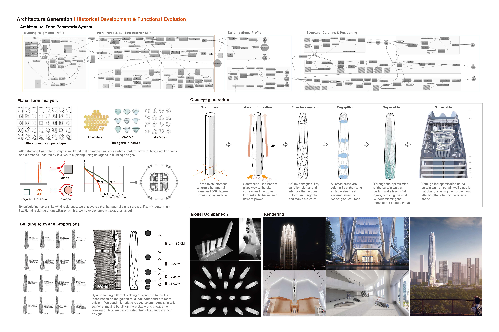
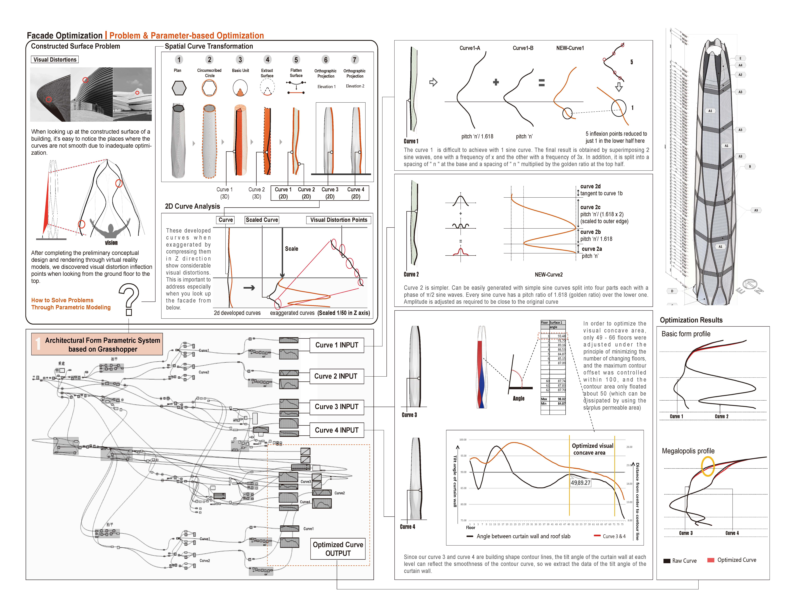
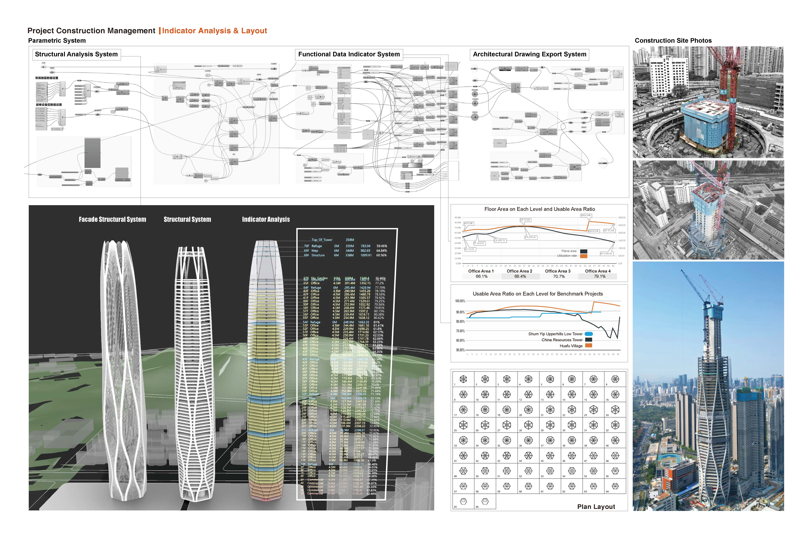

建筑参数化协同设计平台
在深圳市建筑设计研究总院担任建筑师期间，基于Grasshopper开发的建筑参数化设计扩展插件，旨在提升多专业协作效率。
项目成果展示

参数化设计平台概述与核心功能

Grasshopper插件架构与工作流程

多专业协同设计界面

参数化建模工具与算法

项目实施效果与成果总结
核心成果
- • 成功将核心方案协同周期从8天缩短至5天（-37%）
- • 基于Rhino/Grasshopper开发五大核心功能模块
- • 平台已成功复用至2+个大型项目，显著提升团队效率